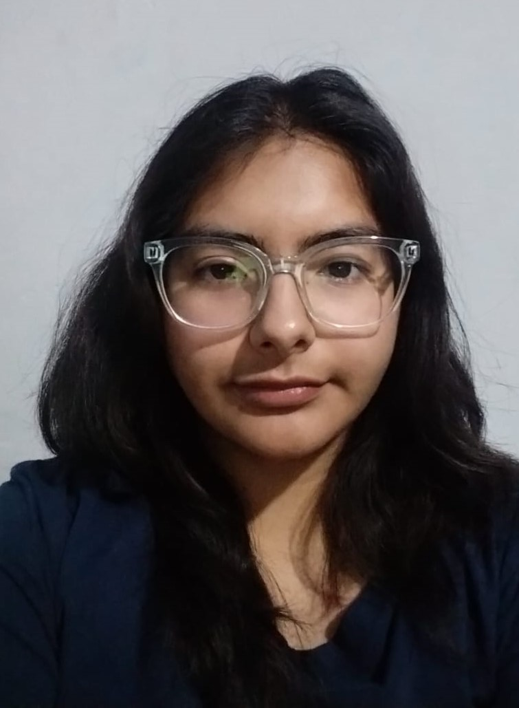

Natalia Guzman Rivera
 Me considero una persona disciplinada, resolutiva e introvererda. Me encanta diseñar, dibujar, el cine, la música y todo lo relacionado con el mundo del arte. Mis aspiraciones pos-universitarias son seguir formándome en el mundo de la ilustración con diferentes técnicas y así un día poder trabajar para una empresa de filmes infantiles.
A parte de considerarme una buena ilustradora, tambien tengo otros talentos como la facilidad de hacer manualidades como hacer y moldear mascaras, bisuteria, entre otros, cocino muy bien en especial en la reposteria y aparte de eso tome un certificado en mixologia que es el preparado de bebidas alcoholicas en cocteles. Actualmente me encuentro estudiando ingles y cursos de chocolateria. Mi objetivo es desarrollar mis conocimientos y conocimientos para trabajar con clientes y proyectos que me permitan expresar mi creatividad y contribuir al exito y crecimiento de las marcas y empresas
Intereses:
- Diseño gráfico y visual
- Ilustración
- Arte y diseño contemporaneo
- Musica y cine
Habilidades:
- Creacion de logotipos y marcas
- Diseño de material de marketing y publicidad
- Edicion deimagenes y fotografia
- Conocimiento de Adobe (Photoshop, Illustraitor,InDedign,etc)